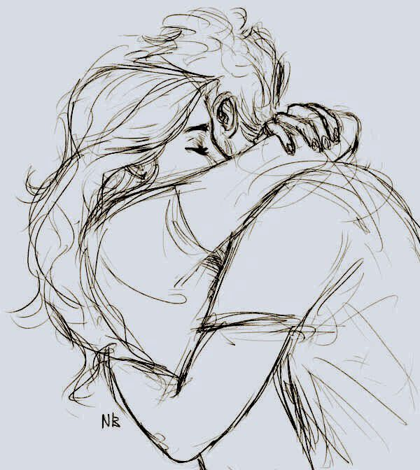
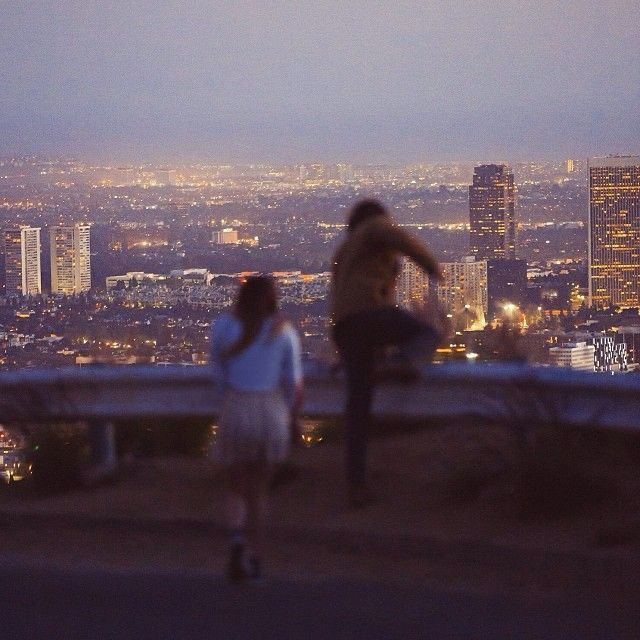

hey
just wanted to tell you ki..
"tu kitna bhi rooth ja mujhse, maine kabhi haar ni manni hai, mein achha banunga tere liye, mujhe apne poori zindagi jo tere saath bitani hai"
I love you jaan
It's okay of we fight, ladai se toh pyaar badhta hai na, tum ni janti, ki mere dil mein tumhare liye kya hai, ya mein kitna zyada chahta hu tumko.
Log kehte hai ki humari first priority humare mummy papa hote hai aur padhai hoti hai, uske baad koi aur aata hai but mein sach kahu toh, mere liye tum equally important ho, jitna mummy papa hai
Ek koi movie hai, naam ni pata mujhe but usmein Varun Dhawan ka ek dialogue hai, woh mein tumko kehna chahta hu:
"Mein kuch kar paunga ya nai mujhe ni pata, but teri har success pe sabse tez taali mein hi bajaunga, teri khushi mein hi meri khushi hai.
Yeh baat bilkul sch hai shivi
Mein keh raha tha shivi ki, ab mein achha banunga, tumhare liye, jo jo gltiyan maine ki hai, ys jis cheezon ki wajah se tumko bura laga hai, tumko hurt hua hai jinn cheezon se, unpe sudhar krunga, mein ek baar bilkul sch sch kahu ?
Meri life ab actual mein meri ni bachi hai, woh tumhari ho gyi hai, kyuki subah uthte hi sabse pehle tumko "Good morning" bhejna ya tumhara message dekhna. Sone se pehle Good night Take care.
Mere liye toh har jagah bas shivi shivi shivi ho gyi hai ab
Mein humesha tumhare saath rehna chahta hu and uske liye mujhe apne andar jo bhi changes laane honge mein launga, bina tumhare kahe and i can promise you, ki mein sch mein achha banunga, achha ladka, jaisa tum chahiti thi.
Jab bhi hum logon ki esi baat hoti thi toh mein kehta tha ki tumko achha ladka zarur mile, kabhi smjhta hi ni tha ki tum chahiti thi ki mein hi woh achha ladka banu, but mujhe realise hui hai yeh cheez ki aaj bhi tum chahiti ho ki mein sch mein waisa ladka banu, kyuki tum bhi mujhe bhut zyada chahiti ho aur ni chahiti jana, toh i promise shivi, mein waisa ladka ban ke dikhaunga tumko.
I promise jaan.
Kahin ni ja raha hu mein tumko chhor ke, hmesha yahin hu, tumhare paas mein, and achha banunga, tumko khud change dikhega mere mein, tumko khush rakhunga, chhote chhote efforts karne se bhi kaafi change aata hai, mein bhi wahi krunga, i promise, promise kya, tumko khud feel hoga, khud dikhega tumko.
A small picture gallery of our future pictures :


I love you shivi, please stay.
~ parth